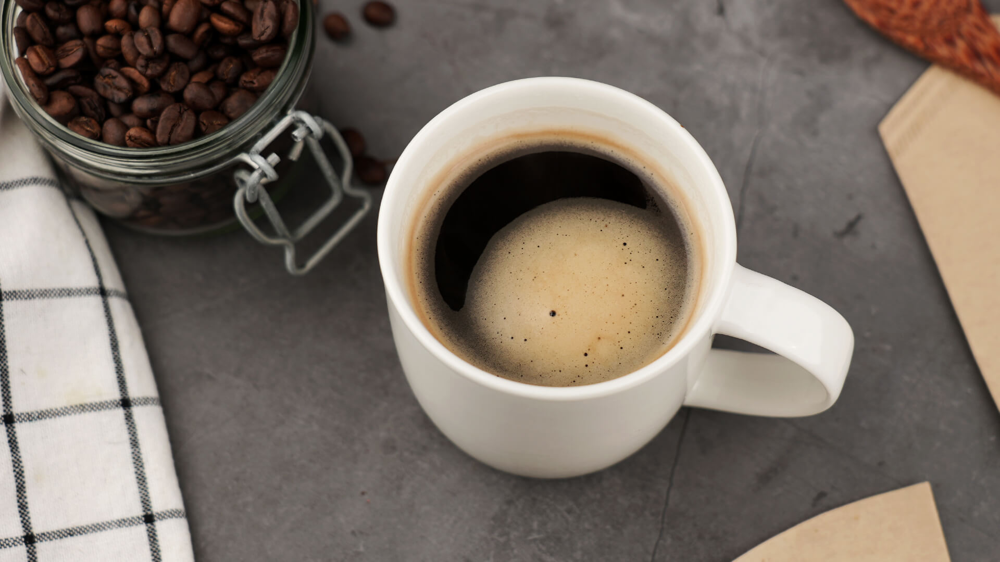

Whiterose Cafe
Cada cafe es un momento compartido.
Que cada cafe sea el mejor.

Sabes preparar tu cafe?
Algunos de nuestros productos
AeroPress $---
Una opción interesante contra esta epidemia de comodidad que invade el mundo del café son las aerospress, probablemente son de las cafeteras más simples y cómodas que existen, la más fácil de limpiar, y que además les suele encantar a los baristas por lo versátiles que son a la hora de conseguir un café.
Coffee Tamper $---
Una de las herramientas que caracteriza a los baristas es el compactador de café o también conocido como Tamper, esta herramienta permite presionar, prensar y compactar manualmente el café molido en el filtro de la máquina durante la preparación del café